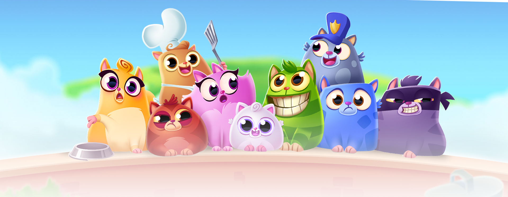

Summary:
Designed and analyzed an A/B test (n=90,000+) to evaluate the impact of progression gating on player retention in a mobile game. Found that the majority of users churned before reaching either gate level, revealing that late-stage gating has limited leverage on overall retention. Among high-engagement players who reached the gates, minimal 7 day retention lift was observed between gate 30 versus 40. Recommended shifting experimentation to earlier-game friction points (levels 5 & 10) to meaningfully impact retention and lifetime value.
- Because over 60% of players churned before reaching level 40, the effective sample size dropped to ~27K.
- This compromised the statistical sensitivity of the tests for Early Return Behavior and Gameplay Depth.
- Mid-term Retention, though adequately powered and showing that there was a statistically significant difference between the gate 30 and gate 40, only shows a minimal difference leading to questions of whether it is meaningful enough.
Methods:
- Retrospective Sensitivity Analysis/ Power Analysis
- A/B Testing of Binary & Continuous Variables:
- Hypothesis Testing
- \(X^2\) test
- Mann-Whitney U Test
Background
One of the main goals of any game is to retain players. A common method of influencing player engagement and retention is the progression system. Progression systems, in general, help give players a sense of progression and completion of goals, which makes games more enjoyable. Within many games, a more specific progression feature known as a progression gate temporarily halts progress, encouraging players to take an action such as waiting, inviting friends, or making an in-app purchase. This, in turn, boosts the average lifetime value per player, a goal of any company building games. Here, we will see how changing when the progression gate occurs may impact retention metrics.
Data
This dataset includes A/B test results of Cookie Cats, a mobile puzzle game from Tactile Entertainment , to examine what happens when the first gate in the game was moved from level 30 to level 40.
userid |
unique identifiers for each player |
version |
Whether the player was put in the control group (gate_30 - a gate at level 30) or the group with the moved gate (gate_40 - a gate at level 40). |
sum_gamerounds |
the total number of game rounds played by each user during the testing period. |
retention_1 |
Did the player return to the game after 1 day? (Categorical [0,1]) |
retention_7 |
Did the player return to the game after 7 days? (Categorical [0,1]) |
Experiment Design
::: {callout-tip icon=“false”}
👾 In Brief
- n= 90,189 players
- Target Variables:
sum_gamerounds retention_1 retention_7
- Control Group:
gate_30 response group of version variable
- Test Group:
gate_40 response group of version variable
- Players were randomly assigned at Install :::
Primary Question
Can shifting a progression gate from level 30 to level 40 meaningfully improve player retention and engagement?
To evaluate the impact of shifting the progression gate, I analyzed:
- 1 Day Retention
- 7 Day Retention
- Total Game Rounds Played
Each metric captures a different stage of engagement: early return behavior, mid-term retention, and depth of game play.
Balance Check
Before running any sort of experiment comparing the effects of different progression gates on retention, we need to check that there is balanced randomized assignment. Ultimately, we find that both groups have been assigned almost the same number of players each. The gate_30 group has 44700 players and the gate_40 group has 45489 players.
Critical Observation: Early Player Churn
| Count |
44700 |
45489 |
| Mean |
52.456 |
51.299 |
| Std |
256.716 |
103.294 |
| Min |
0 |
0 |
| 25% |
5 |
5 |
| Median |
17 |
16 |
| 75% |
50 |
52 |
| Max |
49854 |
2640 |
While the dataset we are using has been been cleaned (of NAs) prior to our use, we can check the summary statistics of the numeric variables to make sure that the data we are using can actually answer our question. While the mean number of rounds played by each version group are about 52 and 51 respectively, the medians tell a very different story.
The median of the players in the gate_30 version only reached up to round 17 and median of the gate_40 version players only reached up to round 16. As the mean can be easily influenced by extreme outliers (shown by the max game rounds played), the average player seems to have never gotten close to the level 30 or 40.
So, what happens when we limit the sample groups to that of players that actually reach both tested progression gate levels (x≥ 40)?
Both sample groups shrink to that of about 30% of the original version sample groups, for a total sample size of [27,393] players. As we do not know the actual number of players that play Cookie Cats, this sample could be too small to be able to extrapolate our results to the total player population. On the other hand, the sample sizes are still relatively large (>10,000), decreasing the likelihood of type I & II error.
For the sake of this analysis, we will use this limited sample to test our hypotheses.
| Count |
13566 |
13827 |
| Mean |
145.713 |
142.668 |
| Std |
452.119 |
151.198 |
| Min |
40 |
40 |
| 25% |
57 |
58 |
| Median |
90 |
92 |
| 75% |
167 |
165 |
| Max |
49854 |
2640 |
Restrospective Sensitivity Analysis
After having observed that 60% of our sample churns far earlier than level 40, a good question to consider is:
Given the effective sample size (~27,000), what magnitude of effect can we expect to detect?
This is because the larger a sample size is, the larger the statistical power and the likelihood of detecting a truly significant effect as the larger size makes it easier to detect effect. The early churn of players may invalidate some of our results.
For the categorical variables, we will use Cohen’s h to attain the effect size measure and determine the required sample size for a chi-square test to be adequately powered. For the continuous variable, due to the skew in the data, we will use the rank biserial r as the measurable effect and determine the required sample size for an adequately powered Mann-Whitney U Test.
1 Day Retention
Both gate versions happened to retain a little under half of their player samples after one day. The gate_30 group retains roughly 83.8% of its players and the gate_40 group retains about 83.0% of its players after 1 day. Below, we tracked the effect size given a variety of percentage point differences, the required sample size to achieve 80% power, and the actual power when n is 13,566.
| 0.5 |
0.013 |
~89626 |
0.19 |
| 0.8 (actual) |
0.022 |
~33953 |
0.43 |
| 1 |
0.027 |
~21623 |
0.61 |
| 2 |
0.055 |
~5270 |
0.994 |
| 3 |
0.083 |
~2280 |
1 |
For the actual difference between the retention rates, the achieved power is 43%, meaning that the reduced samples will not detect an effect of size 0.8. At n=13,566, we need a ~1.5% point difference to achieve 80% power.
7 Day Retention
After 7 days, there is drastic drop off in players in both versions. Like earlier, both versions seem to retain a similar amount of players. The gate_40 group retains about 50.3% after 7 days, while the gate_30 group retains about 48.5% of its players.
| 0.5 |
0.010 |
~156,784 |
0.131 |
| 1 |
0.020 |
~39,227 |
0.380 |
| 1.8 (actual) |
0.036 |
~12,109 |
0.846 |
| 3 |
0.060 |
~4359 |
0.999 |
| 5 |
0.100 |
~1568 |
1 |
For the actual percentage point difference between the gating groups, we find that the achieved power is 84.6%, meaning that the reduced samples will detect an effect of this size.
Total Games Played
To the right, we are checking the distribution of game rounds played by the players during the course of the first 7 days. We expect to see this skew right, indicating that most players only play a few rounds and only a few players play a large number of rounds. As we can see, the distribution shows just as we expected with a majority of players playing below 300 games and only a few making it to the 1000 round mark.
| 0.005 |
0.010 |
~156,974 |
0.131 |
| 0.013 (actual) |
0.026 |
~22610 |
0.587 |
| 0.02 |
0.040 |
~9808 |
0.911 |
| 0.03 |
0.060 |
~4358 |
0.999 |
| 0.05 |
0.100 |
~1567 |
1 |
The RBC of 0.013 indicates that gate_30 players only marginally outrank gate_40 players in total games played. More specifically, gate_30 players outrank gate_40 in approximately 50.7% of random pairings versus 49.35%. For this small effect, we find that the achieved power is 58.7%, meaning that the reduced samples will not detect an effect of this size.
This analysis reveals that early churn didn’t just reduce experiment relevance, it compromised the statistical sensitivity of two out of the three metrics. Only the 7-Day Retention is adequately powered enough to detect the observed effect.
As the lack of power in early return behavior (1-Day Retention) and gameplay depth (Total Game Rounds Played) measures leads us to a pretty high risk of type 2 error, I would want to rerun the experiment to have a sufficient number of respondents that reach the required levels to be affected by the progression gates. But for the purpose of practice, we will continue with these samples.
Because over 60% of players churned before reaching level 40, the effective sample size dropped to ~27K.
- Early Return Behavior and Gameplay Depth are underpowered in detecting the current size of effect
- Mid-Term Retention is adequately powered to detect the observed size of effect.
Analysis
Chi Square (\(X^2\)) Test of Independence:
To test the 1 day and 7 day retention metrics, I will use \(X^2\) tests as we are comparing 2 unpaired sample groups. \(X^2\) tests are generally used to examine whether 2 categorical variables are independent in influencing the test statistic.
| 1 Day Retention |
0.10231 |
| 7 Day Retention |
0.00333 |
Using \(\alpha\)=0.05 as our significance level, we fail to reject the null hypothesis for the retention_1 variable and conclude there is no statistically significant difference in the 1 day retention metric between the different gate groups. However, as evidenced by retrospective sensitivity analysis, this test was inadequately powered (43%), thus this result should be considered with caution.
In comparison, we can reject the hypothesis for the retention_7 variable, concluding there is a statistically significant difference in the 7 day retention metric between the different level gate groups. The earlier sensitivity analysis concluded that this test is adequately powered (84.6%) to detect the observed effect (h=0.036) between the two groups, further validating the result.
While the result of the 7 Day Retention test is promising, we do have to consider whether instituting a change for such a small effect is worth it. With a rough estimate of 2 million installs, this difference represents about 36,000 additional players being retained after a week.
Mann-Whitney U Test
To test our continuous sum_gamerounds variable, I will use a Mann Whitney U Test. While we could have tried to use a t-test, our sum_gamerounds variable violates one very important assumption of the t-test: the data is not normally distributed (as seen in the retrospective power analysis). When we run the test, we find that:
As our \(\alpha\)=0.05 and the p-value is 0.06, convention would suggest that we fail to reject the hypothesis and conclude there is no statistically significant difference between the median number of rounds played in each group.
However, the retrospective sensitivity analysis from earlier revealed that this test is only 59% powered to detect the observed effect (RBC=0.013), falling short of the conventional 80% power threshold. The required sample of ~22,600 per group exceeds what was available from the effective sample. As a result of this, the borderline p-value of 0.06 should be interpreted carefully.
retention_1 : Fail to reject the null hypothesis and must conclude there is no statistically significant difference in the 1 day retention metric between the 2 versions. Early player churn compromises the test’s statistical sensitivity, so this result should be considered with caution.
retention_7 : Can reject null hypothesis and conclude there is a statistically significant difference in the 7 day retention metric between the 2 different versions. While the test is adequately powered, the small observed difference between groups may not be enough to warrant actual changes.
sum_gamerounds: Fail to reject the null hypothesis and conclude there is no statistically significant difference between the median number of rounds played in each group. However, as early player churn compromises the test’s statistical power, this result will be considered with caution.
Conclusion
From the experiments, we found that a statistically significant difference was observed in 7-day retention. Despite that, the effect size is modest and not supported by differences in early retention or total gameplay volume, leading to questions of whether the tested change would actually be meaningful. Monetization data may be able to provide further context for whether the results are meaningful enough.
Instead, the main finding of early player churn (before either progression gate), indicates that late-stage gating is unlikely to influence overall retention metrics at scale. This suggests retention improvements will likely come from optimizing early-game friction and onboarding mechanics rather than adjusting mid-game progression thresholds.
Recommendations
In light of these results, my main concern is what is happening during the earlier rounds of the game that is causing a majority of players to churn. Thus, this experiment should be ran again with progression gates at levels 5 and 10. Assuming that retention effects will be larger earlier in the game, the same sample sizes will give higher power.